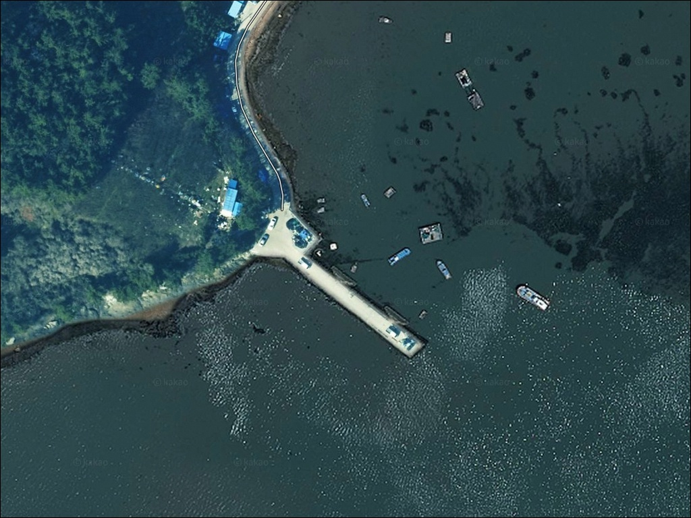
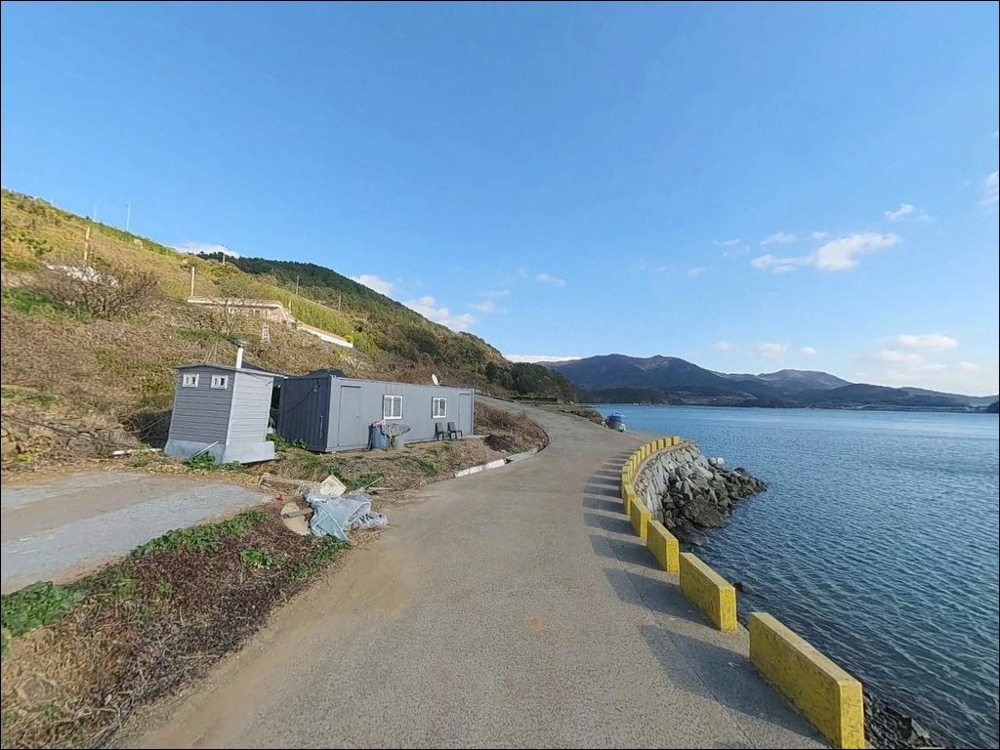
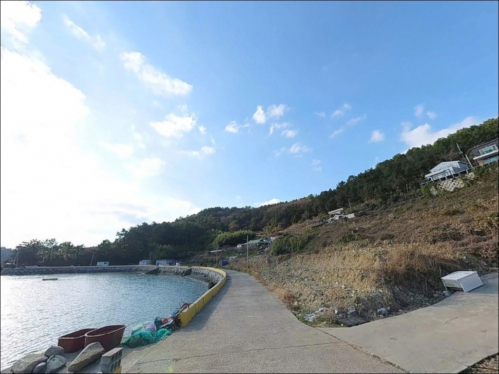
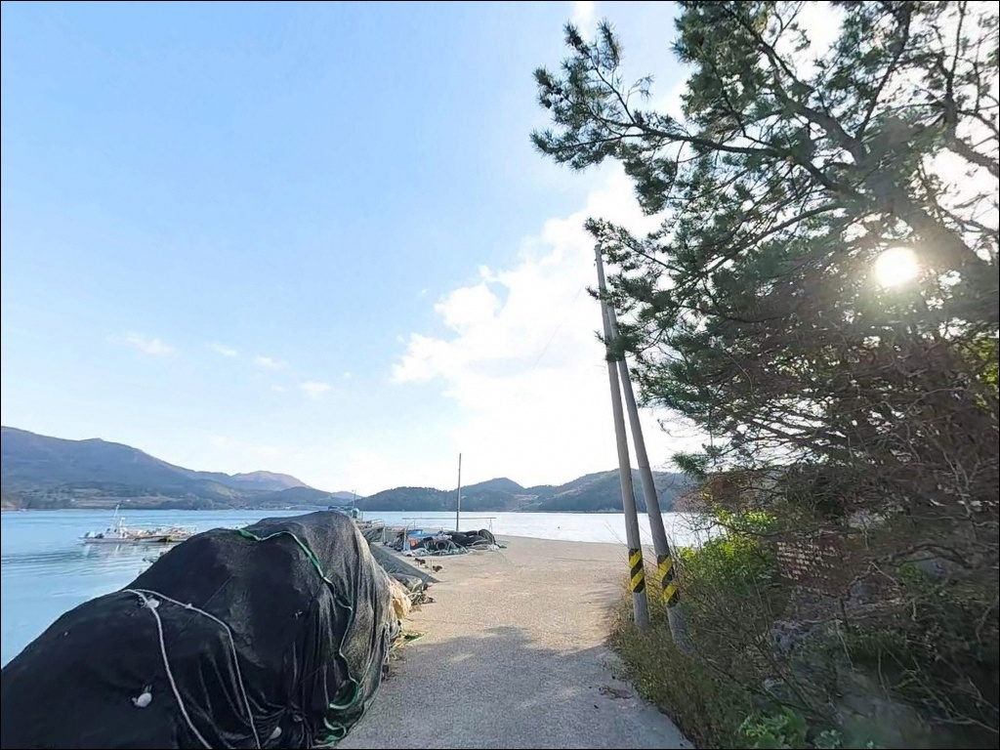
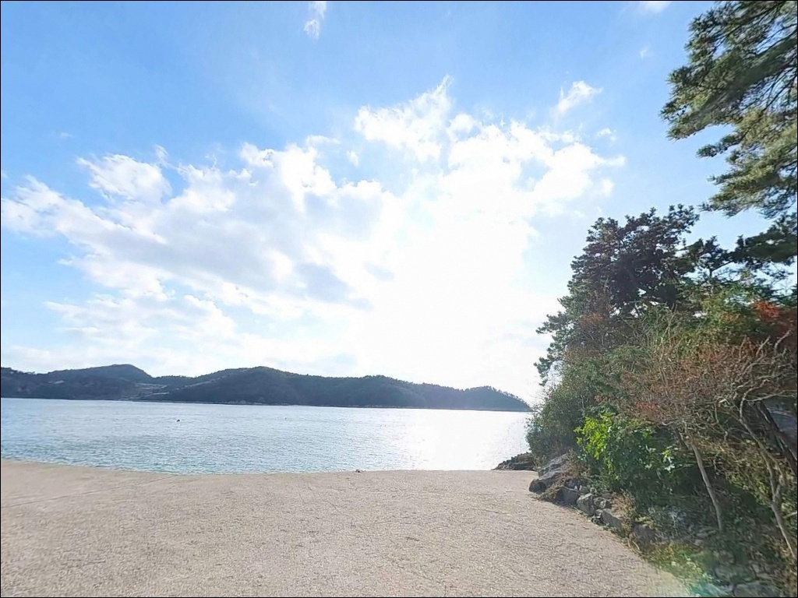
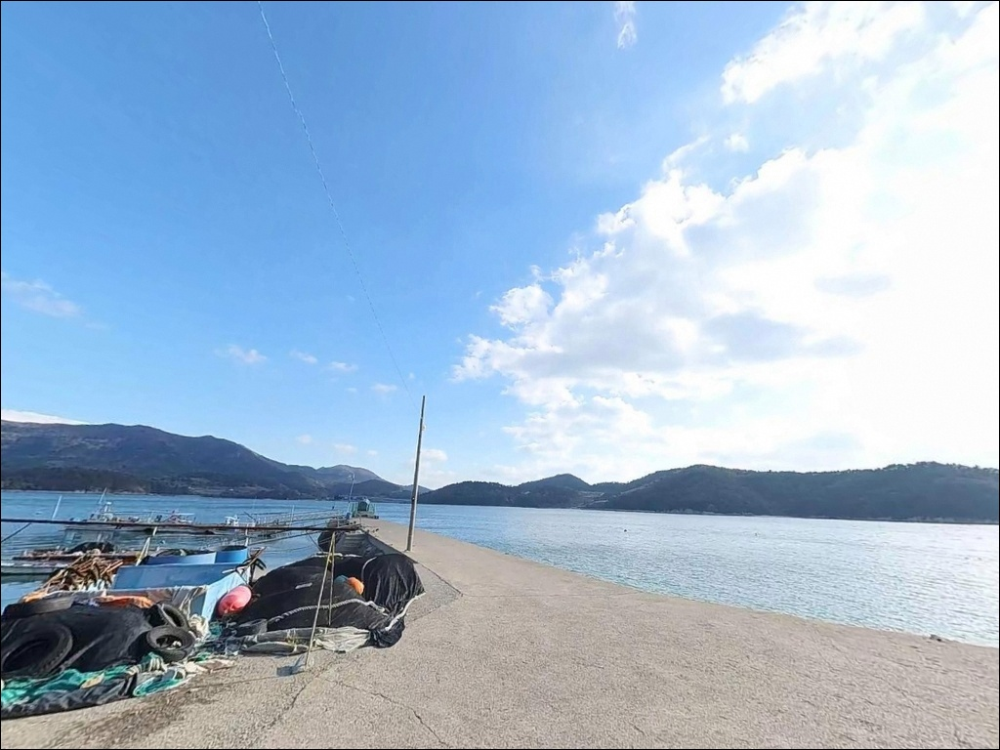
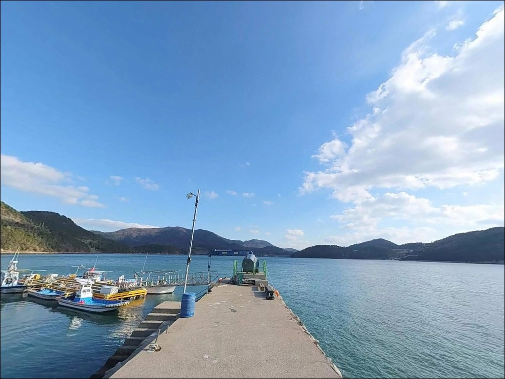
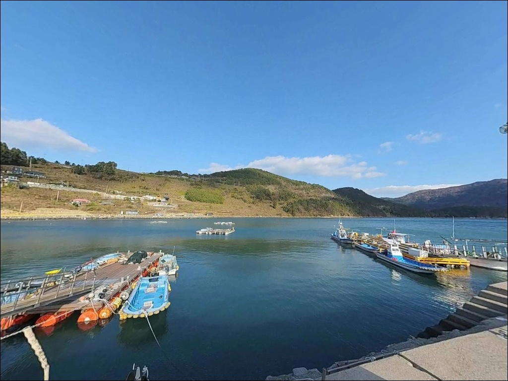
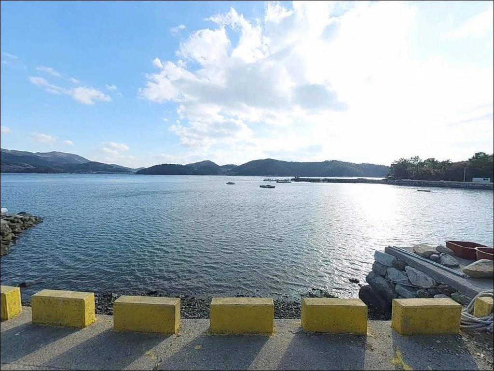

간조에 가면 자리가 사라지는, 고흥 신금리방파제에서 초들물에 맞춘 진입
이 페이지에는 광고(제휴 링크 포함)가 있으며, 광고 링크를 통해 구매하면 운영자가 판매 수익 또는 수수료를 받을 수 있습니다. 포인트 사진: 카카오맵 스카이뷰·로드뷰. 이 페이지의 지도·사진 이미지는 카카오맵의 실제 서비스 이미지와 다를 수 있습니다.


포인트 안내
신금리방파제 (신금항)
전남 고흥군 봉래면 신금리 산 321-4
수심 2m 내외의 방파제에서
간조 전후에 진입하면
어떤 채비를 써도 바닥에 닿는 구조입니다.
신금리방파제는 물때가 낚시 성패를 결정하는
포인트로, 초들물 이후부터
실질 낚시 가능 시간이 열립니다.
나로도항과 가까운 외나로도 서편,
신금리(봉래면 소재지) 해안에 자리한
이 방파제는 전면에 애도(쑥섬)가
자연 방파제 역할을 하는
조용한 생활낚시 포인트입니다.
다도해해상국립공원 구역 내에 위치하며,
바다타임에 공식 등록된 포인트입니다.
이 글은 신금리방파제의
물때 판단 기준, 진입 동선,
낚시 스타일별 적합성, 차박 여건에 집중합니다.
조황 단정이나 특정 어종 보장은
이 글의 범위에 포함되지 않습니다.

1. 진입 동선과 포인트 접근성
외나로도는 나로1대교와 나로2대교를 통해
육지와 연결되어 있어
차량 진입 자체에 장벽은 없습니다.
신금리는 봉래면 소재지로
2차선 포장도로가 방파제 인근까지
연결된 구조입니다.
나로1대교 진입 후 외나로도 도로를 따라
약 2km 직진하면 나로도항 구역에 닿습니다.
신금항 방파제는 이 구역 안에 위치하며,
진입로 자체는 2차선 수준이라
승용차부터 일반 SUV까지
큰 어려움 없이 접근할 수 있습니다.
주차는 나로도 연안여객선터미널 주차장,
나로도항 어판장 주변 공터,
수협 회센터 앞 공간을 활용합니다.
터미널 주차장은 개방형 공영 공간으로
회차에도 여유가 있습니다.

2. 차박 환경과 야간 체류 여건
신금리는 봉래면 소재지 중심부에 해당합니다.
나로도항 항만 조명과 가로등이
야간에도 상시 점등되는 구역으로,
완전한 암흑 환경보다는
항구 특유의 조명 아래 머무는
차박 형태입니다.
민가와 상가가 항구 주변에 밀집해 있어
깊은 독립 차박보다는
낚시를 마치고 짧게 쉬었다 떠나는
동선에 어울립니다.
야간 차량 통행은 낮보다 적은 편이나
항구 특성상 조용한 환경은 아닙니다.
다도해해상국립공원 구역 내 포인트이므로
지정 야영장 외 취사와 야영은
국립공원 관리 원칙상 제한됩니다.
출발 전 고흥군청 또는 국립공원관리공단
고흥분소에 야영 가능 구역을
반드시 사전 확인하는 것이 기본 준비입니다.


3. 주변 편의시설 및 인프라 현황
신금리는 나로도항 인근 봉래면 소재지로
낚시 포인트 중에서는
편의시설 접근성이 좋은 편에 속합니다.
대한낚시(봉래면 신금리 소재)에서
채비와 낚시 소품을 현지 조달할 수 있습니다.
수협 회센터와 봉래시장이 나로도항 인근에 있어
활어 구매와 장 보기가 가능합니다.
나로식당, 순천횟집, 대동식당 등
식당도 반경 1km 안에 위치합니다.
다만 대형 프랜차이즈 편의점은
반경 내에 없으므로
출발 전 식수와 필수 물자를
준비하고 이동하는 것이 좋습니다.
공중화장실은 신금마을회관 인근에 있으며
방파제에서 도보로 약 5분 거리입니다.
응급 상황 발생 시
고흥읍까지 거리가 상당하므로
비상약품과 연료는 출발 전 완비가
기본입니다.

4. 물때가 조과를 가르는 포인트 — 방문 전 준비사항
신금리방파제에서 가장 먼저 확인해야 할 것은
물때입니다.
바다타임 공식 등록 기준으로
이 포인트의 수심은 1.3~2m,
저질은 펄 바닥입니다.
간조 전후에는 수심이 너무 얕아
낚시 자체가 불가능한 상황이 됩니다.
초들물이 시작되어 수위가 올라오면서
조류가 살아나는 타이밍부터
만조 전후까지가 실질 낚시 시간입니다.
바다타임에서 봉래면 기준 물때를 미리 확인하고
입장 시각을 초들물에 맞춰
출발하는 것이 기본 전략입니다.
외나로도 남동부 갯바위와
일부 방파제 구간은
낚시금지 구역으로 지정되어 있습니다.
신금항 방파제는 외나로도 서편 본항 구역이라
해당 제한에 포함되지 않으나,
현장 안내표지판을 반드시 확인한 뒤
자리를 잡는 것이 원칙입니다.
야간 방파제는 가장자리 발판 주의가 필요하며,
구명조끼와 헤드랜턴은 필수입니다.

5. 지형 기반 낚시 여건 분석
신금리방파제는 외나로도 서편,
애도(쑥섬)를 전면에 두고
나로도항 구역에 붙어 있는
소규모 방파제입니다.
방파제 바깥쪽에는 테트라포트와
자연 암반이 혼재하고,
내항 쪽 석축 아래는 모래와 펄이 섞인 바닥입니다.
수심 구조상 방파제 정면 수심은
7~10m 내외로 들물 이후에는 안정적이나,
공식 등록 수심(바다타임 기준)은
1.3~2m 수준입니다.
중들물 이후 본류 흐름의 영향권에 들면서
조류가 살아나고 입질이 집중되는
타이밍이 만들어집니다.
방파제 외항 쪽은 테트라포트 끝에서
수심 변화가 생기는 구간이 형성됩니다.
이 경계 라인이 루어와 에깅 채비가
힘을 발휘하는 자리입니다.
암반 기반 지형이라 밑걸림 가능성이 있으므로
여분 채비를 넉넉히 준비하는 것이
기본입니다.
최신 조황은 출조 전에
나로도항 조황, 봉래면 낚시 키워드로
반드시 검색해 보시기 바랍니다.
수심이 만조 전후로 가장 안정적인 구조이므로
이 포인트에서 간조 직후 진입하면
조류가 없는 상태에서 기다리는 시간이 길어집니다.
물때 확인이 방문 성패를 가르는 포인트입니다.


6. 포인트에 어울리는 낚시 스타일
이 포인트에서 지형 조건에 가장 잘 맞는 방식은
원투낚시입니다.
펄 바닥 구조의 물양장 앞 개방 수면을 겨냥해
근투~중거리 원투로
도다리, 보리멸, 붕장어를 노릴 수 있습니다.
들물이 오르는 타이밍에
채비를 바닥에 고정하는 방식이
이 포인트에서 잘 맞습니다.
릴찌낚시와 민장대도 어울립니다.
방파제 꺾이는 구간과 끝단에서
조류가 살아나는 들물 타이밍을 노리면
감성돔, 볼락, 노래미 입질을
기대해 볼 수 있습니다.
야간 조과가 뚜렷한 편으로,
랜턴 아래 방파제 석축 주변을
천천히 탐색하는 방식이 유효합니다.
루어낚시는 방파제 외항 석축 주변을
지그헤드와 미노우 플러그로 공략할 때
농어, 볼락, 우럭을 기대해 볼 수 있습니다.
4월 이후에는 갑오징어와 주꾸미가
내항 입구 및 외항 턱 부근에서
에깅 채비에 반응하는 지형 조건입니다.

7. 대안 포인트와 플랜 B 동선
신금리방파제 물때가 맞지 않거나
주차 여건이 여의치 않을 때
가장 먼저 고려할 대안은
나로도항 남방파제입니다.
신금항 방파제에서 약 1.7km 거리로,
같은 나로도항 구역 내에 있어
어종 조건이 비슷하고
규모가 더 큰 편입니다.
외초항 서쪽 방파제는
신금항에서 약 2.6km 거리에 있습니다.
규모는 작은 독립 방파제 형태로
조용한 환경에서 낚시를 원할 때
대안이 됩니다.
나로2대교 아래는
교각 주변에 조류가 집중되는 구간으로
약 6.8km 거리의 루어낚시 대안입니다.
차박 대안 후보로는
나로2대교 아래 공터가
교각 조명 덕분에 야간 환경이
상대적으로 안정된 편입니다.
다만 이 구역도 동일하게
다도해해상국립공원 내에 해당하므로
같은 야영 제한 원칙이 적용됩니다.

초들물 타이밍을 알면
신금리방파제가 달라 보입니다
원투낚시나 릴찌낚시를 즐기는 낚시인이라면
신금리방파제의 조건이 맞는 구조입니다.
수심 2m 내외의 펄 바닥이지만
초들물부터 만조 전후까지는
조류가 살아나며 입질이 들어오는
실전 낚시 포인트입니다.
반면 간조에 도착하거나
물때 확인 없이 방문하면
낚시 자체가 불가능한 상황이 됩니다.
바다타임 물때 확인, 국립공원 야영 규정 파악,
초들물 기준 출발 시각 설정,
이 세 가지를 갖추고 간다면
나로도항 인근에서
조용하게 낚시를 즐길 수 있는 포인트입니다.
주변 수협 회센터, 낚시용품점, 봉래시장이
1km 안에 모여 있어
물자 보충이 수월하고,
낚시를 마친 뒤 회 한 접시 받아
차 안에서 쉬어 가는
당일 차박 동선으로도 활용하기 좋은 곳입니다.